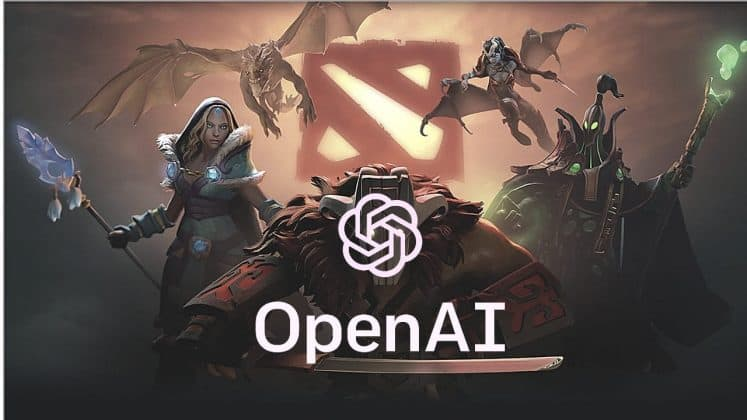
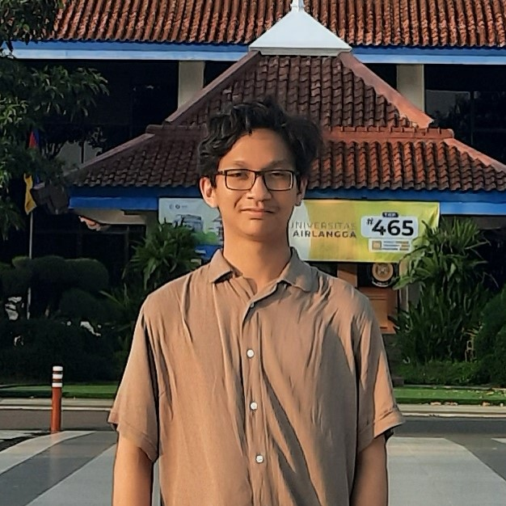

Open AI Five Dota 2
Oct 18, 2021
Pada tahun 2019 tepatnya pada saat The International 9 diselenggarakan, OpenAI Five cukup menggemparkan komunitas Dota di seluruh dunia. Hal ini dikarenakan OG yang pada saat itu juara The International 8 bisa dikalahkan oleh bot dengan skor telak 2-0.
Baca Selengkapnya...Data Science 101
Oct 7, 2021

Data science adalah ilmu multidisiplin yang menggabungkan matematika, statisika, ilmu komputer. dan domain knowledge dengan tujuan untuk menganalisa data (data analysis) dari suatu himpunan data baik skala kecil (sampel) maupun besar (populasi).
Baca Selengkapnya...About Me
Saya seorang mahasiswa yang tertarik dengan dunia teknologi, terutama Sains Data dan Artificial Intelligence...
Baca Selengkapnya...